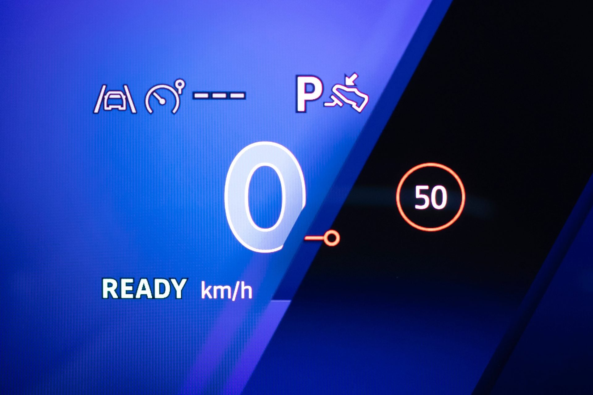

Votre voiture bientôt bridée par l’électronique pour vous empêcher de rouler trop vite ?

🔥 Top produits tech du moment
🛒 Voir le prix : Epson Ink/604 Pineapple C13T10G64010 Multipack
Publicité — Liens de partenariat Amazon : une commission peut être reversée, sans surcoût pour vous.
L'actualité tech ne cesse d'évoluer. Nouveaux produits, acquisitions, découvertes : chaque jour apporte son lot d'informations importantes pour comprendre le monde numérique de demain.
Ce qu'il faut retenir
Les voitures modernes sont équipées jusqu’aux dents et certains équipements pourraient justement faire grincer des… dents.
Parmi eux, le géorepérage, qui permettra à terme de bloquer votre vitesse contre votre gré.
Pourquoi c'est important
Cette information pourrait avoir des répercussions sur tout le secteur technologique. Elle concerne directement les utilisateurs de technologies numériques et mérite d'être suivie de près dans les prochaines semaines. Votre voiture bientôt bridée par l’électronique pour vous empêcher de rouler trop vite ? est ainsi un signal à prendre en compte pour comprendre les évolutions du secteur.
En résumé
Retenez l'essentiel : Votre voiture bientôt bridée par l’électronique pour vous empêcher de rouler trop vite ?. Cette actualité a été rapportée par 01net. Nous continuerons de suivre ce sujet et de vous tenir informés des prochaines évolutions.
🚀 Vous êtes freelance tech ?
Calculez votre TJM en 30 secondes : micro-entreprise, SASU, EURL ou portage salarial. Gratuit, taux 2025.
Calculer mon TJM →Source : 01net